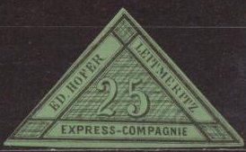

Note: on my website many of the
pictures can not be seen! They are of course present in the
catalogue;
contact me if you want to purchase it.
The Leitmeritz (nowadays called Litomerice) stamps are examples of bogus issues. They were issued somewhere in the 19th century purely to earn money from stamp collectors. They were listed in the Arthur Maury Catalogue of 1875.
The stamps below were printed in black on coloured paper (11 different colours), in the values 5 k (value), 10 k (value), 15 k (value), 25 k (value in triangle) and 50 k (a pigeon carrying a letter, intended for parcels).


15 k in two different types (not for example the position of the
corner "15"s).

50 k: First three stamps of the same type, last stamp in a
different type
According to an article by Harry Rooke (1963 and 1988) in The Philatelist, which I have not been able to see myself, there are three printings of the above stamps. A first one, possibly genuine, but suppressed by the authorities. A second printing, certainly a forgery, which could have been made by the famous Spiro Brothers from Hamburg. The colors used for the paper coincide with the Hamburg Booten issues. Finally, a third printing, attributed to another famous forger S.Allan Taylor from Boston.
See also: http://www.philateria.com/html/leitmeritz.html.
(Reduced sizes)
In this lion design I have seen 1 Kr blue, 2 Kr
red, 3 Kr yellow, 4 Kr brown (orange), 5 Kr green, 10 Kr red, 12
Kr blue, 15 Kr lilac, 20 Kr brown and 50 Kr green. The value
inscription is always in black. I have also seen a yellow stamp
without any value or 'kr'. A 25 Kr blue also exist according to
http://www.czechoslovakphilately.org/pdf/1976_09_Nov.pdf. These
stamps were prepared by Dr.Elb of Dresden,
but never used. The 'Almanach du Timbre-Poste' of J.B.Moens
(1886) states that 'M.Sig Friedl, donne l'histoire plus ou
moins vraie des timbres de Leitmeritz. Elle ne rencontre
qu'incrédulité' ('Mr. Sigmund Friedl
gives the more or less true history of the stamps of Leitmeritz.
It only encounters disbelief'). This seems to indicate that Moens
thought these stamps were made by Sigmund Friedl. An image of the
above stamp (1 kr) can also be found in this Almanach.
The earliest illustration of these stamps that I could find was
in 'The American Journal of Philately' Dec.20, 1869 page 144. It
was already described as 'trash' back then.
{kind=link}
{kind=link}